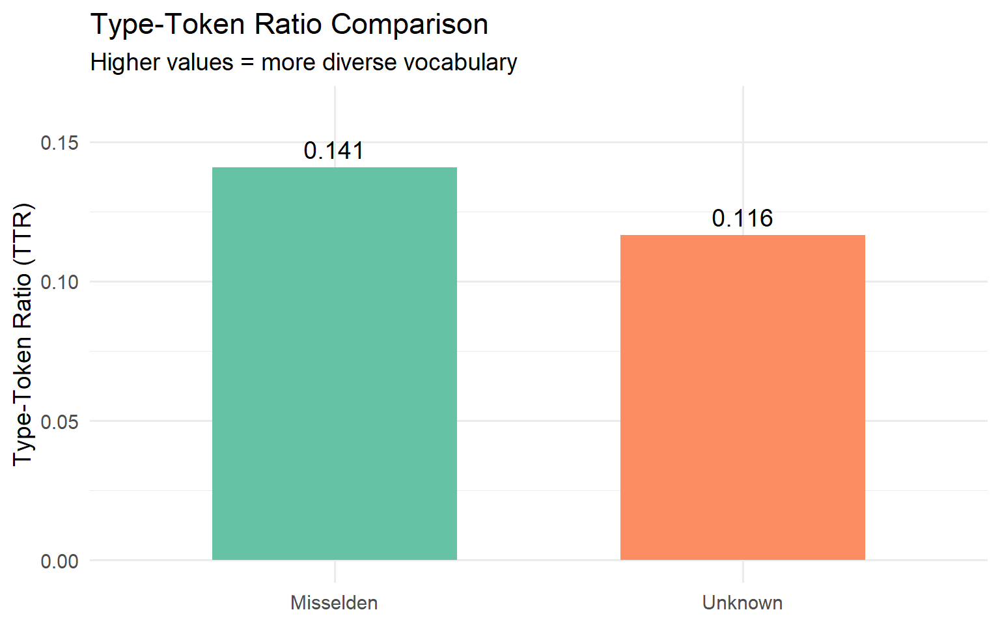
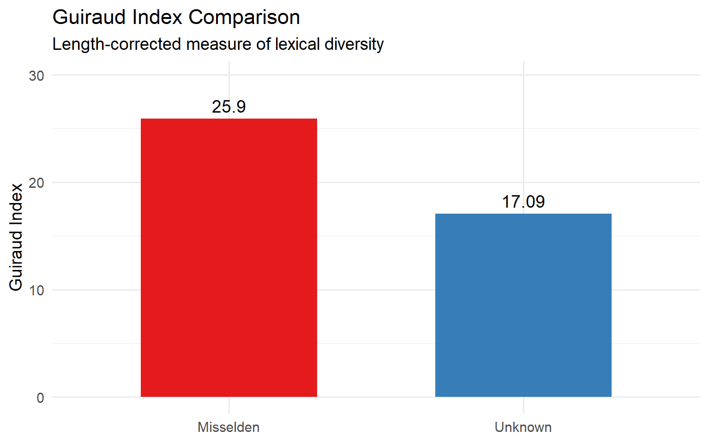
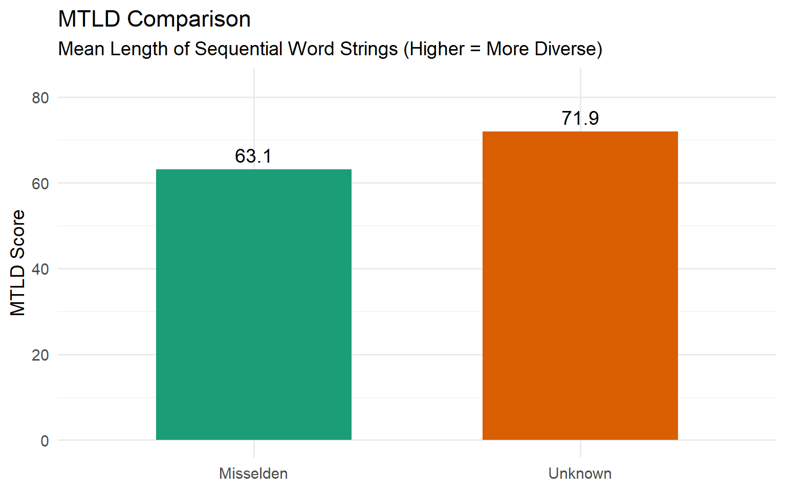
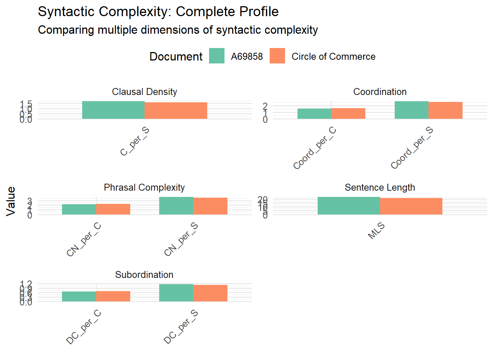

library(readr)
library(tidyverse)
library(tidyr)
library(tidytext)
library(ggplot2)
library(udpipe)
library(koRpus)
#install.packages("koRpus.lang.en") # You will need to do this once
library(koRpus.lang.en)
theme_set(theme_minimal(base_size = 14))Week 05: Text Representation (2)
Measures of Lexical Complexity
In this tutorial, we’ll explore three measures of lexical complexity (also called lexical diversity or lexical richness) using two historical texts; one you know well by now, the other one is a new mystery text that you can find on Canvas:
- “The Circle of Commerce” by Edward Misselden (1623)
- “A69858.txt”
We want to see if the two texts differ in terms of vocabulary diversity in a meaningful way.
What is Lexical Complexity? Lexical complexity measures how varied a writer’s vocabulary is. A text with high lexical diversity uses many different words, while a text with low diversity repeats the same words frequently. We’ll learn three different, but well-validated, measures:
- Type-Token Ratio (TTR) - The simplest measure
- Guiraud Index - Corrects for text length
- Measure of Textual Lexical Diversity (MTLD) - The most sophisticated measure
I. Type-Token Ratio (TTR)
We are going to introduce a new library for MTLD (koRpus). This is a great library to be familiar with because it includes functions for automatics language detection, hyphenation, several indices of lexical diversity (including MTLD), and indices of readability. It’s also well documented and a standard package in academic work.
# Read the text files
circle <- read_file("texts/A07594__Circle_of_Commerce.txt")
mystery <- read_file("texts/A69858.txt")
# Create a tidy data frame with both texts
texts_df <- tibble(
document = c("Circle of Commerce", "A69858"),
author = c("Misselden", "Unknown"),
text = c(circle, mystery)
)
# Display basic information
texts_df %>%
select(document, author) %>%
knitr::kable(caption = "Our Two Texts")| document | author |
|---|---|
| Circle of Commerce | Misselden |
| A69858 | Unknown |
Now that we have our two texts loaded, let start with Type-Token Ratio (TTR). TTR is the simplest measure of lexical diversity. It’s calculated as:
\[\text{TTR} = \frac{\text{Types (unique words)}}{\text{Tokens (total words)}}\]
# Tokenize the texts and do some basic cleaning (review week 2 if you are usure!)
tokens <- texts_df %>%
unnest_tokens(word, text) %>%
mutate(word = str_to_lower(word))
# Calculate TTR for each text
ttr_results <- tokens %>%
group_by(document, author) %>%
summarise(
tokens = n(), # Count total words
types = n_distinct(word), # Count unique words
ttr = types / tokens, # Calculate TTR
.groups = "drop"
)
# Display results
ttr_results %>%
knitr::kable(
digits = 3,
caption = "Type-Token Ratio Results",
col.names = c("Document", "Author", "Total Words", "Unique Words", "TTR")
)| Document | Author | Total Words | Unique Words | TTR |
|---|---|---|---|---|
| A69858 | Unknown | 5942 | 1317 | 0.222 |
| Circle of Commerce | Misselden | 33894 | 4769 | 0.141 |
Note: I am using a new function, knitr::kable(x), to display the results as a simple table. It takes whatever is the x (=data frame or matrix) and makes it into a table.
Let’s visualize the results that we just got:
# Create a bar plot comparing TTR
ggplot(ttr_results, aes(x = author, y = ttr, fill = author)) +
geom_col(width = 0.6) +
geom_text(aes(label = round(ttr, 3)),
vjust = -0.5, size = 5) +
scale_fill_brewer(palette = "Set2") +
labs(
title = "Type-Token Ratio Comparison",
subtitle = "Higher values = more diverse vocabulary",
x = NULL,
y = "Type-Token Ratio (TTR)"
) +
theme(legend.position = "none") +
ylim(0, max(ttr_results$ttr) * 1.15)
From this first measure, we see that Misselden’s text has a lower TTR than the unknown one. What does this mean, exactly? Well, we can see that in The Circle of Commerce only 14.1% of the words are new word forms (that is, a word string–after normalization–that has not appeared before in exactly that form in the text so far), while for the “mystery” text, 22.2% of the words are new word forms. That is, TTR is a measure of “non-repetition” of word forms. Another way to think about it is that for The Circle of Commerce, if you encounter any random word in the text, that’s a 14.1% chance that it’s a word type you haven’t seen before. So, The Circle of Commerce has lower lexical variety than A69858: it repeats itself more than A69858.
Warning: longer texts will almost always have a lower TTR score than shorter texts, even if they have a richer vocabulary (can you see why?). Earlier, we saw that A69858 has, in total, 5942 words, while Circle of Commerce has, in total, 33894. The two texts are substantially different in length, so we need to double check with a length-corrected measure (such as Guiraud and MTLD).
Why you might still want to compute TTR: it’s a standard across disciplines and you will encounter it in publications, so you need to know what you are looking at. Anyone reading a corpus analysis will recognize it and be able to understand what it represents. TTR is a standard measure of lexical variety. It’s easy to audit and easy to reproduce. It’s also a good first diagnostic check.
II. Guiraud Index
The Guiraud Index (also called Root TTR) solves the text length problem by using a mathematical correction:
\[\text{Guiraud} = \frac{\text{Types}}{\sqrt{\text{Tokens}}}\]
By dividing by the square root of tokens instead of the raw count, the Guiraud Index is more stable across different text lengths. This adjustment is a practical approximation that assumes that as the length of a text doubles, its vocabulary does not double. The square root in the Guiraud index is there because vocabulary growth in texts is empirically sublinear: as a text gets longer, new words appear more slowly. The Guiraud Index essentially asks: how many distinct word forms does a text introduce once we partially correct for the fact that longer texts repeat terms more often?
Calculate Guiraud Index:
# Calculate Guiraud Index for each text
guiraud_results <- tokens %>%
group_by(document, author) %>%
summarise(
tokens = n(),
types = n_distinct(word),
guiraud = types / sqrt(tokens), # Guiraud formula
.groups = "drop"
)
# Display results
guiraud_results %>%
knitr::kable(
digits = 3,
caption = "Guiraud Index Results",
col.names = c("Document", "Author", "Total Words", "Unique Words", "Guiraud Index")
)| Document | Author | Total Words | Unique Words | Guiraud Index |
|---|---|---|---|---|
| A69858 | Unknown | 5942 | 1317 | 17.085 |
| Circle of Commerce | Misselden | 33894 | 4769 | 25.904 |
And let’s visualize it:
# Create a bar plot comparing Guiraud Index
ggplot(guiraud_results, aes(x = author, y = guiraud, fill = author)) +
geom_col(width = 0.6) +
geom_text(aes(label = round(guiraud, 2)),
vjust = -0.5, size = 5) +
scale_fill_brewer(palette = "Set1") +
labs(
title = "Guiraud Index Comparison",
subtitle = "Length-corrected measure of lexical diversity",
x = NULL,
y = "Guiraud Index"
) +
theme(legend.position = "none") +
ylim(0, max(guiraud_results$guiraud) * 1.15)
This result gives a very different picture from what we noticed with TTR: The Circle has a more varied vocabulary than the mystery text when we partially account for the length of the text.
However, you want to make sure that when you compare texts using the Guiraud Index, you are looking at texts that are of similar genre and (though less so) similar length. Different types of texts are associated with different demands on vocabulary and rhetorical strategies (for example, a legal argument will require different vocabulary choice than a news report of the same court proceeding). Because the index still depends on text length and genre, there is no universal ‘benchmark’ scale. Instead, values should be interpreted relatively, as we are doing here.
This leads us to:
III. Measure of Textual Lexical Diversity (MTLD)
What is MTLD?
MTLD is the most sophisticated measure we’ll use. It was designed to account for the problems of the measures above. TTR and Guiraud essentially ask: given a text of length N, how many distinct word forms does it contain? MTLD instead asks: how long can a text continue before its lexical diversity drops below a fixed threshold? It works by:
- Reading through the text sequentially
- Calculating a running TTR as it goes
- Counting how many times the TTR drops below 0.72 (this has been determined empirically across many text types and genres). Once you detect that the document’s TTR drops below 0.72, you count one factor. Then you reset and restart computing TTR on the next chunk of text.
- The result is the average “length” needed before vocabulary starts repeating and it’s computed by:
Measure of Textual Lexical Diversity (MTLD)
The Measure of Textual Lexical Diversity (MTLD) is computed as:
\[ \text{MTLD} = \frac{N}{F} \]
where:
N = total number of word tokens in the text
F = total number of factors, including any partial factor at the end of the text
In practice, MTLD is usually computed in both directions (forward and backward through the text), and the final value is the mean of the two:
\[ \text{MTLD}_{\text{final}} = \frac{\text{MTLD}_{\text{forward}} + \text{MTLD}_{\text{backward}}}{2} \]
Higher MTLD = more diverse vocabulary (the author can go longer before repeating words).
Let’s compute this second version (both forward and backward through the text using the koRpus package (and use the formatting that it requires). Note: koRpus gives you a number of options which you can find here.
# Function to calculate MTLD for a text
calculate_mtld <- function(text_string, doc_name) {
# Create a temporary file (koRpus requirement)
temp_file <- tempfile(fileext = ".txt")
writeLines(text_string, temp_file)
# Tokenize with koRpus
tokenized <- tokenize(temp_file, lang = "en")
# Calculate MTLD
mtld_result <- MTLD(tokenized)
# Extract the MTLD value
mtld_value <- mtld_result@MTLD$MTLD
# Clean up
unlink(temp_file)
return(mtld_value)
}
# Calculate MTLD for both texts
mtld_results <- texts_df %>%
rowwise() %>%
mutate(
mtld = calculate_mtld(text, document)
) %>%
ungroup() %>%
select(document, author, mtld)Language: "en"
Language: "en"# Display results
mtld_results %>%
knitr::kable(
digits = 2,
caption = "MTLD Results",
col.names = c("Document", "Author", "MTLD")
)| Document | Author | MTLD |
|---|---|---|
| Circle of Commerce | Misselden | 63.09 |
| A69858 | Unknown | 84.17 |
An R coding note for those of you who are new to coding. The MTLD computation using koRpus is being put together in the curly brackets that define all the steps that the new function we are defining, calculate_mtld, will perform. NB: calculate_mtlddoes not actually compute MTLD, it just takes a text string (our Tidy data), converts it to a file for koRpus, calls in koRpus to compute MTLD, and then returns everything to Tidy.
Let’s visualize the results:
# Create a bar plot comparing MTLD
ggplot(mtld_results, aes(x = author, y = mtld, fill = author)) +
geom_col(width = 0.6) +
geom_text(aes(label = round(mtld, 1)),
vjust = -0.5, size = 5) +
scale_fill_brewer(palette = "Dark2") +
labs(
title = "MTLD Comparison",
subtitle = "Mean Length of Sequential Word Strings (Higher = More Diverse)",
x = NULL,
y = "MTLD Score"
) +
theme(legend.position = "none") +
ylim(0, max(mtld_results$mtld) * 1.15)
Well, this is interesting and important in understanding how these measures work. Unlike Guiraud, but like TTR, MTLD assigns a greater lexical variety to our mystery text. What MTLD is picking up is a difference in how lexical variety is distributed across the text.
TTR and Guiraud only care about how many distinct word forms there are overall in the texts. They are both global measures of variety.
MTLD is sensitive to how repetition is patterned through text “time” (think of reading the text as your measure of text “time”). A higher MTLD in the mystery text means that it sustains lexical variety more consistently across its length while Misselden’s lower MTLD means that The Circle includes repetition-heavy chunks earlier on and more often (even though it globally, when adjusted for length, ends up with more unique token types).
Give this kind of result, we expect that in The Circle, Misselden includes lots of repeated terms and phrases within sections (local repetition as he perhaps defines and explains a given concept/idea), but overall introduces more terms per unit of text length. The mystery text, instead, distributes its vocabulary more evenly. A69858 uses fewer unique words in total, but sustain more lexical variety within any given passage.
Measures of Syntactic Complexity
So much for vocabulary measures! What if we want to understand the complexity (or lack thereof) of the syntax of a text?
The core idea that we will use for this is to measure structure via frequency counts (e.g., number of clauses, number of dependent clauses), ratios (e.g., clauses per sentence; dependent clauses per clause), or length indices (e.g., mean length of clause in words).
Note: research in syntax complexity is particularly well-represented in second language acquisition research (see, for example here for a strong discussion).
We are still working with the same two texts as above!
texts_df <- tibble(document = c("Circle of Commerce", "A69858"),
author = c("Misselden", "Unknown"),
text = c(circle, mystery)
)
texts_df# A tibble: 2 × 3
document author text
<chr> <chr> <chr>
1 Circle of Commerce Misselden "THE CIRCLE OF COMMERCE. The Prooeme. HERODOTVS …
2 A69858 Unknown "THe Author craves leave in the first place, to …We are going to use something new UDPipe to: tokenize, do parts of speech tagging, lemmatize, and do dependency parsing. Note: for Early Modern texts there is a package out of Northwestern (MorphAdorner) that performs better. Since I don’t have any Early Modernists this semester, I am going to stick with a more generalizable workflow.
#Load an English UD (= Univesal Dependencies) model ONCE
model_info <- udpipe_download_model(language = "english-ewt")
ud_model <- udpipe_load_model(model_info$file_model)I chose english-ewt because it’s widely adopted and well-documented for English prose. It captures the core syntactic relations and it does a decent job on pre-Modern texts. I would not use this for my own research, but that’s a niche issue.
Now, let’s annotate both texts using UDPipe:
anno_df <- texts_df %>%
mutate(
# Parse each text with the UD parser; set doc_id to our document name
anno = map2(text, document, ~ udpipe_annotate(ud_model, x = .x, doc_id = .y) %>%
as.data.frame())
) %>%
# Keep only parsed annotations, then unnest into rows
select(anno) %>%
unnest(anno) %>%
# Use the UD doc_id as our document label (and drop any duplicates cleanly)
rename(document = doc_id) %>%
# Select columns for syntactic analysis
select(
document,
paragraph_id,
sentence_id,
token_id,
token,
lemma,
upos, # part of speech
feats, # grammatical features (e.g., verb form)
head_token_id, # head of dependency relation
dep_rel # dependency relation type
)
anno_df %>% glimpse()Rows: 47,121
Columns: 10
$ document <chr> "Circle of Commerce", "Circle of Commerce", "Circle of C…
$ paragraph_id <int> 1, 1, 1, 1, 1, 1, 1, 1, 1, 1, 1, 1, 1, 1, 1, 1, 1, 1, 1,…
$ sentence_id <int> 1, 1, 1, 1, 1, 2, 2, 2, 3, 3, 3, 3, 3, 3, 3, 3, 3, 3, 3,…
$ token_id <chr> "1", "2", "3", "4", "5", "1", "2", "3", "1", "2", "3", "…
$ token <chr> "THE", "CIRCLE", "OF", "COMMERCE", ".", "The", "Prooeme"…
$ lemma <chr> "the", "circle", "of", "Commerce", ".", "the", "Prooeme"…
$ upos <chr> "DET", "NOUN", "ADP", "PROPN", "PUNCT", "DET", "NOUN", "…
$ feats <chr> "Definite=Def|PronType=Art", "Number=Sing", NA, "Number=…
$ head_token_id <chr> "2", "0", "4", "2", "2", "2", "0", "2", "6", "4", "4", "…
$ dep_rel <chr> "det", "root", "case", "nmod", "punct", "det", "root", "…For head_token_id, what we are doing at (*) is important in creating a dependency tree. Here’s a toy example:
# Create an example parsed sentence
example_sentence <- tibble(
token = c("The", "big", "dog", "barks"),
token_id = c(1, 2, 3, 4),
head_token_id = c(3, 3, 4, 0),
Relationship = c(
'"The" depends on word #3 (dog)',
'"big" depends on word #3 (dog)',
'"dog" depends on word #4 (barks)',
'"barks" is the ROOT (doesn\'t depend on anything)'
)
)
example_sentence %>%
knitr::kable(
caption = 'Example: Dependency structure of "The big dog barks"',
align = c("l", "c", "c", "l")
)| token | token_id | head_token_id | Relationship |
|---|---|---|---|
| The | 1 | 3 | “The” depends on word #3 (dog) |
| big | 2 | 3 | “big” depends on word #3 (dog) |
| dog | 3 | 4 | “dog” depends on word #4 (barks) |
| barks | 4 | 0 | “barks” is the ROOT (doesn’t depend on anything) |
There will be grammar: we are going to define some syntactic complexity features by using dependency relations. In the code below, we are going to create binary flags for different syntactic structures.
syntax_df <- anno_df %>%
mutate(
is_word = upos != "PUNCT", #<--is it a word (and not punctuation?)
# Is this an independent clause? finite verbs are proxy for indipendent clauses
is_clause = (upos %in% c("VERB", "AUX")) &
str_detect(coalesce(feats, ""), "VerbForm=Fin"),
# Dependent clause?
is_dep_clause = dep_rel %in% c(
"advcl", #adverbial clause
"ccomp", # clausal complement
"xcomp", #open clausal complement
"acl", #adnomial clause
"acl:relcl" #relative clause
),
# Is this coordination? That is, does it use "and" "or" etc.?
is_coord = dep_rel %in% c("conj", "cc"),
# Nominal complexity: these relations make noun phrases more complex
is_complex_nominal = dep_rel %in% c(
"amod", # adjective modifier ("big cup")
"nmod", #nominal modifier ("cup of tea")
"compound", # compound ("lemon tea")
"appos" #apposition ("tea, my favorite!")
)
)A quick note about punctuation: we filter out punctuation because punctuation itself doesn’t add to a sentence complexity. While someone typing ‘I “like” lemon tea’ changes the meaning from ‘I like lemon tea,’ it doesn’t add to syntactic complexity.
If you want to know a bit more about clauses, you can find the full list here. But a quick summary for our needs is below:
| Relation | Full Name | What It Modifies | Example | UD Documentation |
|---|---|---|---|---|
| advcl | Adverbial clause | Verb/predicate | I left because I was tired | advcl |
| ccomp | Clausal complement | Verb (as object) | She said that he arrived | ccomp |
| xcomp | Open clausal complement | Verb (shares subject) | I want to leave | xcomp |
| acl | Adnominal clause | Noun | The dog sleeping there | acl |
| relcl | Relative clause | Noun | The book that I read | acl:relcl |
Let’s check what we did:
# looking at the first 20 rows in the data frame
syntax_df %>%
select(document, token, upos, is_clause, is_dep_clause) %>%
head(20)# A tibble: 20 × 5
document token upos is_clause is_dep_clause
<chr> <chr> <chr> <lgl> <lgl>
1 Circle of Commerce THE DET FALSE FALSE
2 Circle of Commerce CIRCLE NOUN FALSE FALSE
3 Circle of Commerce OF ADP FALSE FALSE
4 Circle of Commerce COMMERCE PROPN FALSE FALSE
5 Circle of Commerce . PUNCT FALSE FALSE
6 Circle of Commerce The DET FALSE FALSE
7 Circle of Commerce Prooeme NOUN FALSE FALSE
8 Circle of Commerce . PUNCT FALSE FALSE
9 Circle of Commerce HERODOTVS NOUN FALSE FALSE
10 Circle of Commerce in ADP FALSE FALSE
11 Circle of Commerce his PRON FALSE FALSE
12 Circle of Commerce CLIO NOUN FALSE FALSE
13 Circle of Commerce , PUNCT FALSE FALSE
14 Circle of Commerce reportes VERB TRUE FALSE
15 Circle of Commerce that SCONJ FALSE FALSE
16 Circle of Commerce CROESVS PROPN FALSE FALSE
17 Circle of Commerce King PROPN FALSE FALSE
18 Circle of Commerce of ADP FALSE FALSE
19 Circle of Commerce LYDIA PROPN FALSE FALSE
20 Circle of Commerce had VERB TRUE TRUE Now that we have parsed our texts and identified syntactic features, we can measure complexity. Let’s do this through five measures. Important: these measures are meant for relative comparison between documents!
Calculate Mean Length of Sentence (MLS): how long are sentences on average?
Calculate Clausal Density (C/S): how many clauses per sentence?
Subordination (DC/C, DC/S): how much embedding?
Coordination (Coord/C, Coord/S): how much coordination?
Phrasal Complexity (CN/C, CN/S): how complex are noun phrases?
Before we jump into the details of these measures, we need to aggregate at the sentence level and count syntactic features for each individual sentence:
sentence_df <- syntax_df %>%
filter(is_word) %>% #count words (not punctuation)
group_by(document, sentence_id) %>% #group by document and sentence
summarise(
words = n(), #number of words per sentence
clauses = sum(is_clause), # number of clauses per sentence
dep_clauses = sum(is_dep_clause), #number of dependent clauses per sentence
.groups = "drop"
)
sentence_df# A tibble: 1,872 × 5
document sentence_id words clauses dep_clauses
<chr> <int> <int> <int> <int>
1 A69858 1 29 1 2
2 A69858 2 44 3 2
3 A69858 3 45 6 5
4 A69858 4 28 1 3
5 A69858 5 6 0 0
6 A69858 6 39 1 0
7 A69858 7 23 0 2
8 A69858 8 64 7 5
9 A69858 9 35 3 3
10 A69858 10 27 1 2
# ℹ 1,862 more rows1. Mean length of sentence: now we measure the average sentence length by number of words. The assumption behind this step is that longer sentences tend to be more syntactically complex.
mls_df <- sentence_df %>%
group_by(document) %>%
summarise(
MLS = mean(words), # Average words per sentence
.groups = "drop"
)
# Let's take a look
mls_df # A tibble: 2 × 2
document MLS
<chr> <dbl>
1 A69858 22.9
2 Circle of Commerce 21.22. Overall Sentence Complexity (C/S = Clauses per sentence): while longer sentences tend to be more complex, that’s not the only way complexity works. A short sentence in English, such as “The dog I saw bit my cousin,” can be structurally complex. The next step is to count clauses. More clauses allow for the possibility of more syntactic complexity via coordination and subordination.
#Calculate clauses per sentence
clausal_density_df <- sentence_df %>%
group_by(document) %>%
summarise(
sentences = n(),
clauses = sum(clauses),
C_per_S = clauses / sentences,
.groups = "drop"
)
# Let's check and how do they compare?
clausal_density_df# A tibble: 2 × 4
document sentences clauses C_per_S
<chr> <int> <int> <dbl>
1 A69858 262 451 1.72
2 Circle of Commerce 1610 2581 1.603. Subordination (DC/C and DC/S): this measures how much the author of the text uses dependent clauses (subordination). Subordination creates hierarchical, embedded structures. For example, think of this (monster) sentence: “Although the merchants insisted that the shortage was temporary, and because the city council feared that the unrest would spread unless action were taken immediately, the King decided that he would issue new regulations after he had consulted his advisors.”
It contains multiple embedded dependent clauses (“Although…”, “that the shortage…”, “because…”, “unless…”, “that he would…”, “after he had…”), demonstrating how subordination creates a layered, hierarchical structure that is characteristic of complex syntax.”
subordination_df <- sentence_df %>%
group_by(document) %>%
summarise(
clauses = sum(clauses),
dep_clauses = sum(dep_clauses),
sentences = n(),
DC_per_C = dep_clauses / pmax(clauses, 1), #avoid division by 0 (shouldn't happen, but if no clauses were detected in the sentence, we still want it to run)
DC_per_S = dep_clauses / sentences,
.groups = "drop"
)
subordination_df# A tibble: 2 × 6
document clauses dep_clauses sentences DC_per_C DC_per_S
<chr> <int> <int> <int> <dbl> <dbl>
1 A69858 451 306 262 0.678 1.17
2 Circle of Commerce 2581 1795 1610 0.695 1.11What do these measures mean?
DC/C (Dependent Clauses per Clause): What proportion of clauses are dependent? Higher value means that there is more subordination relative to total clauses.
DC/S (Dependent Clauses per Sentence): How many dependent clauses in each sentence on average? The higher the measure, the more embeddings/subordination per sentence.
4. Coordination (Coord/C and Coord/S): we are next going to measure how much the author use **coordination** (linking clauses with “and”, “but”, “or”). This is a measure of how “horizontal,” rather than hierarchical subordination.
coordination_df <- syntax_df %>%
group_by(document) %>%
summarise(
coord_relations = sum(is_coord),
clauses = sum(is_clause),
sentences = n_distinct(sentence_id),
Coord_per_C = coord_relations / pmax(clauses, 1),
Coord_per_S = coord_relations / sentences,
.groups = "drop"
)
coordination_df# A tibble: 2 × 6
document coord_relations clauses sentences Coord_per_C Coord_per_S
<chr> <int> <int> <int> <dbl> <dbl>
1 A69858 691 451 262 1.53 2.64
2 Circle of Commerce 4071 2581 1611 1.58 2.53These are “densities” of coordination:
Coord/C (Coordination per Clause): Total number of coordination (“and”, “or”, “but”…) markers divided by number of clauses.
Coord/S (Coordination per Sentence): Total number of coordination markers divided by number of sentences.
Note: our coordination measure looks high (>2). I bolded “markers” in “coordination markers” because what we are counting is any coordination marker, including in, for example, noun phrases (“trade and commerce”) or in a list of coordinated adjectives (“lawful, honest, and profitable”). So you are not just counting the number of coordinated clauses, but rather the frequency of parallel syntactic structures.
5. Phrasal Complexity (CN/C and CN/S): writing increases in complexity not just through clauses, but through elaborated phrases. This is especially common in specialized or technical writing. Noun phrases are phrases built around a noun (or pronoun) that act as a unit in a sentence (if you are rusty on noun phrases aka nominal phrases, check this wikipedia entry).
nominal_df <- syntax_df %>%
group_by(document) %>%
summarise(
complex_nominals = sum(is_complex_nominal),
clauses = sum(is_clause),
sentences = n_distinct(sentence_id),
CN_per_C = complex_nominals / pmax(clauses, 1),
CN_per_S = complex_nominals / sentences,
.groups = "drop"
)
nominal_df# A tibble: 2 × 6
document complex_nominals clauses sentences CN_per_C CN_per_S
<chr> <int> <int> <int> <dbl> <dbl>
1 A69858 994 451 262 2.20 3.79
2 Circle of Commerce 5828 2581 1611 2.26 3.62As a way to understand the difference between clausal and phrasal complexity, look over this example:
More clauses: The ship was large and fast and was in port. (Not great construction, but plenty of phrases).
More complex phrase: The large fast ship was in port.
Let’s bring everything together:
# Combine all measures
all_measures <- mls_df %>% # ← Added mls_df %>%
left_join(clausal_density_df %>% select(document, C_per_S), by = "document") %>%
left_join(subordination_df %>% select(document, DC_per_C, DC_per_S), by = "document") %>%
left_join(coordination_df %>% select(document, Coord_per_C, Coord_per_S), by = "document") %>%
left_join(nominal_df %>% select(document, CN_per_C, CN_per_S), by = "document")
all_measures %>%
knitr::kable(
digits = 2,
col.names = c("Document", "MLS", "C/S", "DC/C", "DC/S",
"Coord/C", "Coord/S", "CN/C", "CN/S")
)| Document | MLS | C/S | DC/C | DC/S | Coord/C | Coord/S | CN/C | CN/S |
|---|---|---|---|---|---|---|---|---|
| A69858 | 22.85 | 1.72 | 0.68 | 1.17 | 1.53 | 2.64 | 2.20 | 3.79 |
| Circle of Commerce | 21.23 | 1.60 | 0.70 | 1.11 | 1.58 | 2.53 | 2.26 | 3.62 |
And let’s visualize it
# Reshape for plotting
syntax_long <- all_measures %>% # ← Added %>%
pivot_longer(
cols = -document,
names_to = "Measure",
values_to = "Value"
) %>%
mutate(
Category = case_when(
Measure == "MLS" ~ "Sentence Length",
Measure == "C_per_S" ~ "Clausal Density",
Measure %in% c("DC_per_C", "DC_per_S") ~ "Subordination",
Measure %in% c("Coord_per_C", "Coord_per_S") ~ "Coordination",
Measure %in% c("CN_per_C", "CN_per_S") ~ "Phrasal Complexity"
)
)
# Plot
ggplot(syntax_long, aes(x = Measure, y = Value, fill = document)) +
geom_col(position = "dodge", width = 0.7) +
facet_wrap(~Category, scales = "free", ncol = 2) +
scale_fill_brewer(palette = "Set2") +
labs(
title = "Syntactic Complexity: Complete Profile",
subtitle = "Comparing multiple dimensions of syntactic complexity",
x = NULL,
y = "Value",
fill = "Document"
) +
theme_minimal(base_size = 12) +
theme(
axis.text.x = element_text(angle = 45, hjust = 1),
legend.position = "top"
)
OK, we have numbers and pretty pictures, but what does this all mean? Looking at these numbers, my take away is that the two texts are fairly similar in syntactic complexity. The mystery text has marginally longer sentences with more clauses, while Misselden’s text shows slightly more elaborate noun phrases. But nothing remarkable. Both texts employ comparable levels of subordination and coordination, suggesting similar levels of structural sophistication in their writing.
Given that the results for both texts are nearly identical (differences of 0.1-0.2 across most measures), I (and most researchers) would conclude these texts show no meaningful difference in syntactic complexity. Of course, this is a rather limited example, where I am comparing just two texts. If I had a large corpus, then I would want to take a more rigorous approach. We will come back to this over the next couple of weeks.